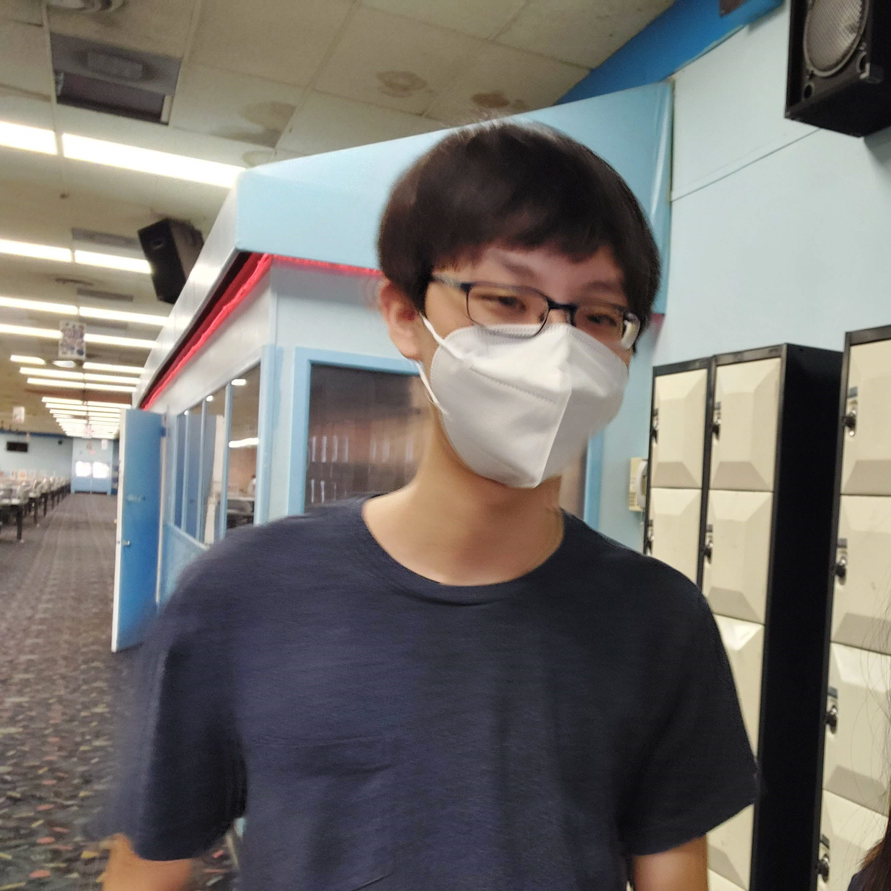
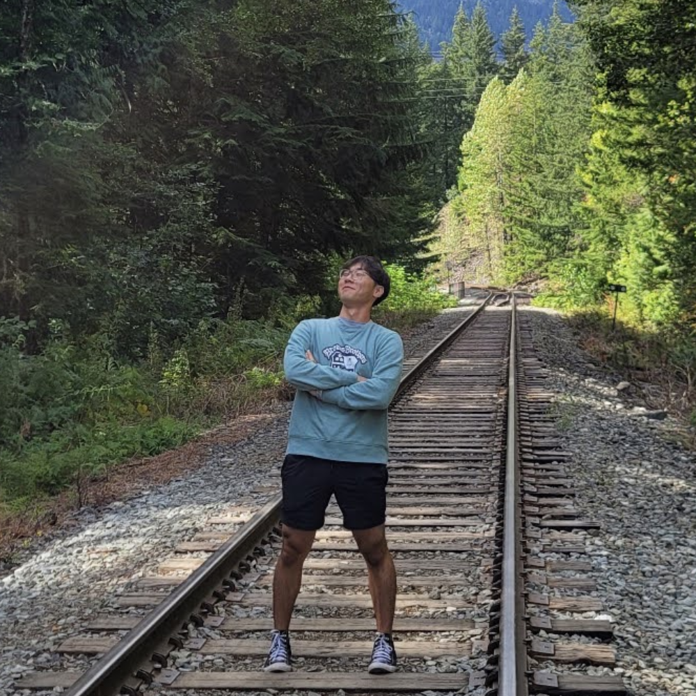
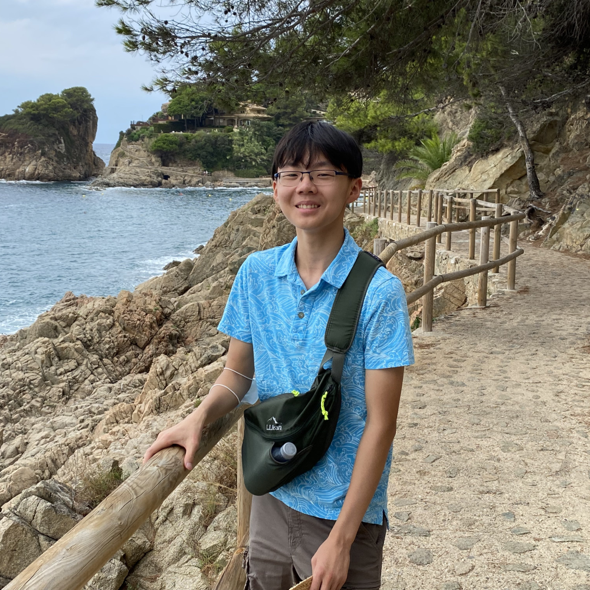
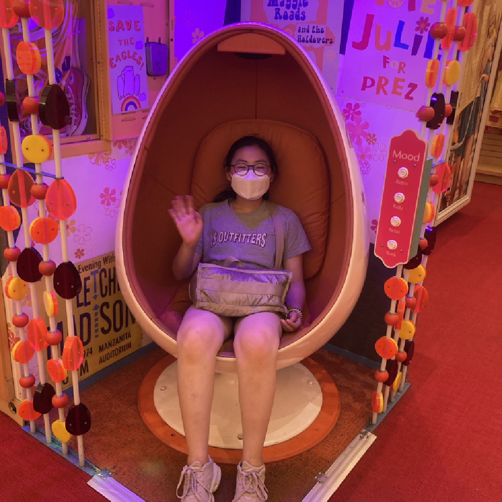
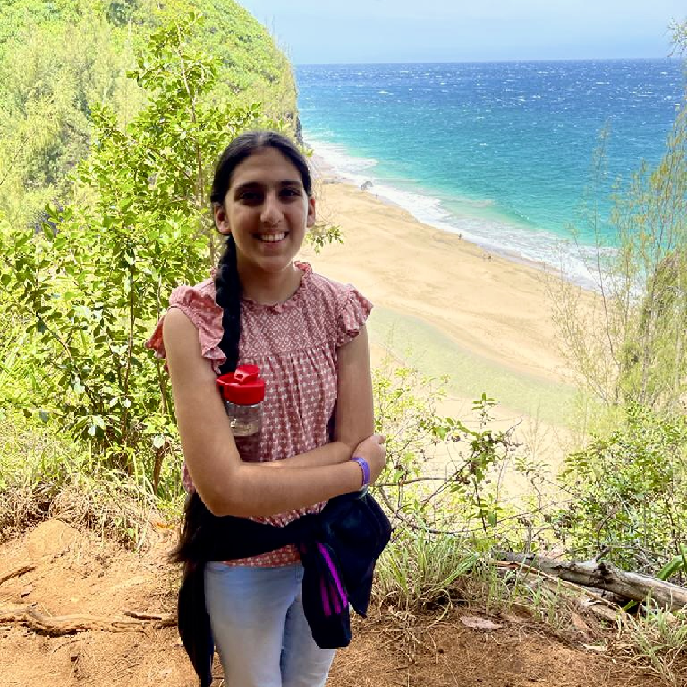

info BCA Math Team
The Bergen County Academies Math Team is one of the strongest math teams in the nation (check Past Results in the News page). The team participates in many math competitions during the year, both locally and across the globe.
The Math Team is open to all middle and high school students, regardless of mathematical ability. For students in high school (and some advanced middle schoolers), the Saturday Math Team meets at BCA every Saturday for three (1-4 PM). These meetings will consist of a combination of lectures, actual competitions and practice competitions. Recordings of previous lectures can be found at the archive page.
We are also responsible for organizing and running the Joe Holbrook Memorial Math Competition, the largest middle school math competition in Bergen County. For more information, please visit its official website at https://holbrook.bcamathteam.org.
group Math Team Leadership
|
Jaiden Shin
Captain jaishi23@bergen.org  |
Hi! I'm Jaiden, a senior in AAST and I've been a part of Math Team since middle school. Within math my favorite subjects are combinatorics and number theory. Outside of math I enjoy learning computer science, playing tennis, and following soccer. I can't wait to see everyone this year... |
|
Lance Bae
Captain Webmaster lanbae23@bergen.org  |
Hi! I'm Lance, and I'm currently a senior in ATCS. I joined Math Team during my freshman year at BCA, and I've really enjoyed being a part of the awesome community. Math is a really intricate and diverse subject, and I hope we'll be able to explore a lot of it (not just competitive!) this school year. Outside of math, I enjoy competitive programming and following the New York Yankees. Hope you enjoy Math Team! |
|
Nikhil Mudumbi
Captain nikmud23@bergen.org 
|
Hey! I'm Nikhil, a senior in AAST. I've been involved in Math Team since middle school, and I've been doing math competitions for even longer. In the realm of math and math-related things, I really like geometry, number theory, physics, and coding. In my free time, I enjoy listening to music, practicing karate, and watching football. Math Team is a really special place to meet a lot of fun people and do a lot of fun things, so I can't wait to see everyone this year! |
|
Joy Ren
joyren24@bergen.org 
|
Hi! I'm a junior in AAST and I have been participating in Math Team since middle school. Math Team has always been a special community for me where we can all gather together and learn about challenging and interesting topics. Besides math, I also love baking desserts, hiking, and hanging out with my bird. I'm excited to meet you all and work on some fun problems together! |
|
Justin Zhang
juszha24@bergen.org  |
I am Justin, a junior in AAST. I joined the BCA Math Team in eighth grade, and I enjoy working and thinking about math problems with others. I am excited for Math Team to return back in-person, and I look forward to meeting you there! |
|
Krish Ramkumar
kriram24@bergen.org |
Hi! I'm a junior in ABF who dabble in middle school math team and continued with the BCA Math Team as a freshman. I believe strongly that math is for everyone, and a love of math can stem from anywhere. The BCA Math Team is a place for all types of people with all types of math. We hope to create a place to laern, make friends, and importantly have fun. My current favorite subjects are group theory and linear algebra, which are both very discrete and foundational but immensely beautiful and visual. Outside of school, I enjoy philosophy, badminton, and good music (Lance has better taste than me, though). I'm very excited to meet you all in-person this year! |
|
Luna Lee
lunlee24@bergen.org  |
Hello! I am Luna, a junior in AEDT. I am super excited to meet you all and look forward to doing math together :). I've been doing competitive math since middle school and have been part of the BCA Math Team since my freshman year. Other than math, I enjoy robotics, baking, and journaling. Feel free to reach out if you ever have a question, need advice, or just want to chat! |
|
Riddhi Lamba
ridlam24@bergen.org  |
Hey! I'm Riddhi, a junior in AEDT. I love to read, dance, and play the flute. But, most of all, I've always loved math! It wasn't until I joined Math Team during my freshman year at BCA, though, that I began to truly appreciate the beauty and complexity of the subject. Math Team is so much more than just contests and obscure theorems. It is an amazing community where we get to explore and appreciate math beyond the traditional lens and I strongly believe anyone can enjoy it. I'm looking forward to seeing everyone there! |
|
Marvin Mao
marmao25@bergen.org |
Hello! I’m a sophomore in AAST and attended the BCA Math Team for many years in elementary and middle school. I like number theory and combinatorics, and outside of math I enjoy puzzles and programming. I am looking forward to meeting you all! |
| Michael Abramson (micabra@bergen.org) | Dr. Abramson has been working with the Math Team since 2005. As a student of contest writer Steven Conrad, he was a top-ten finisher on the USAMO, finished second at ARML, and attended the prestigious Math Olympiad Program (MOP) twice as a student and twice as a counselor. |
| Jonathan Pinyan (jonpin@bergen.org) | Mr. Pinyan is a 2003 alumnus of the Bergen County Academies, and has taught at the school since 2013. As a member of the BCA Math Team, Mr. Pinyan competed at ARML seven times, took the USAMO five times, and earned a perfect score on the AMC-12 in 2003. After receiving a bachelor's degree from Washington University and a teaching certification from Ramapo, Mr. Pinyan returned to BCA, where he now teaches Structures & Proofs, and Analysis II. He has taught at the BCA summer camp each year since 2008. |
| Ian Askins | Mr. Askins is an alumnus of the Bergen County Academies. He has taught at the summer math camp and worked with the math team since 2014. |
| Dan Plotnick | Mr. Plotnick is a former student of Mr. Holbrook at Freeport High School on Long Island. Dan competed in the early years of ARML and NYSML, attended MOP twice as well as the Hampshire College summer program, and studied mathematics at Harvard College. |
| Joe Holbrook | Joe Holbrook was the original coach of the AAST Math Team, and led it from the school's founding in 1992 until his 2010 death. He remains an inspiration to us all, and we strive to live up to his idea that Math Team is not just for the best, but that all students have something to gain from competition math, and all students are welcome at all math team events, whenever possible. |